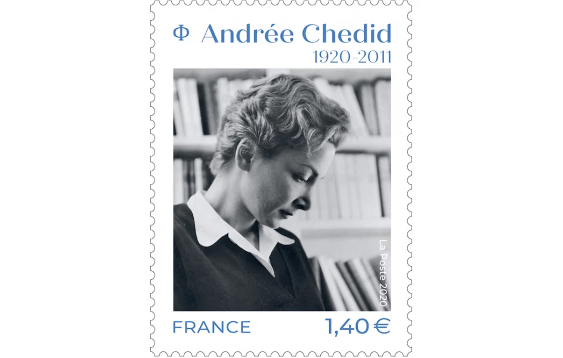

<!DOCTYPE html>
<html lang="en">
    <meta charset="UTF-8">
    <meta name="viewport" content="width=device-width, initial-scale=1.0">
    </html>
    <head>
        <title>Jo Black FED</title>
    </head>
    <header>
        <h1>Jo Black FED</h1>
    </header>
    <body>
        <h1>HTML exercise 1</h1>
        <h2>A page by Jo Black</h2>
        <h3>Purpose</h3>
        <p>I have created this page as my first piece of homework for the Purple Beard FED course</p>
        <h3>Requirements</h3>
        <p>The requirements are to:
            <ol>
                <li>create an html page</li>
                <li>add to local git repo using <em>git add</em>command after having created the file in the FED local directory</li>
                <li>include a header, body and footer</li>
                <li>in the body include a heading, paragraph and an image</li>
            </ol>
        </p>
        <h3>Subject of my page: Andree Chedid</h3>
        
        <h4>Who is she?</h4>
        <p>Andrée Chedid (Arabic: أندريه شديد) 20 March 1920 to  6 February 2011, born Andrée Saab Khoury, was an Egyptian-French poet and novelist of Syrian/Lebanese descent. She is the recipient of numerous literary awards and was made a Grand Officer of the French Legion of Honour in 2009.</p>
        <p>
            Andree Chedid described her work as "an eternal quest for humanity."

        </p>
        <h4>References</h4>
        <p>
        <cite><a href="https://en.wikipedia.org/wiki/Andr%C3%A9e_Chedid">Wikipedia Entry for Andree Chedid</a></cite></p>

    </body>
    <footer>
        <h5>A Purple Beard Learning Portfolio by Jo Black</h5>
   <a href=""mailto:joanne_black@learners.purplebeard.co.uk>Jo at Purple Beard</a>
<p> copyright: 2023</p>


   </footer>
    </html>